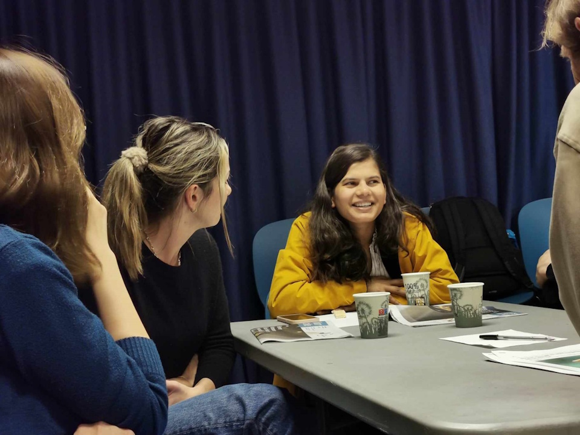
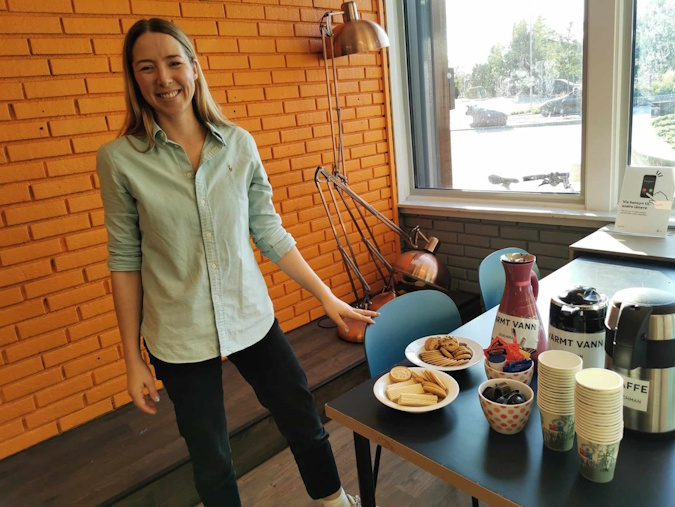
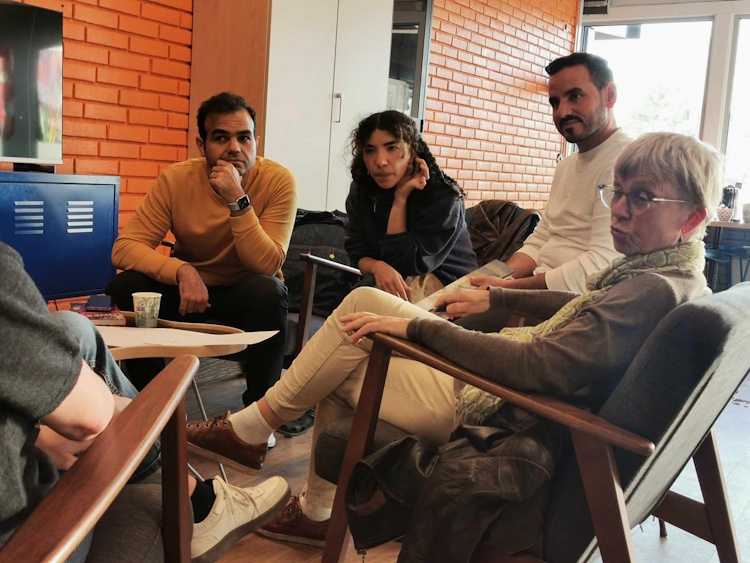
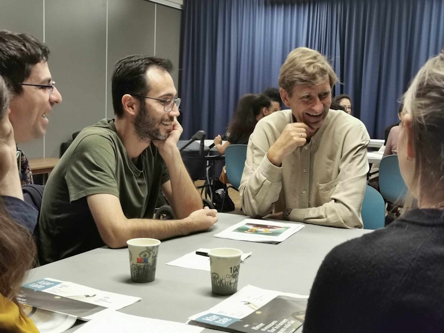
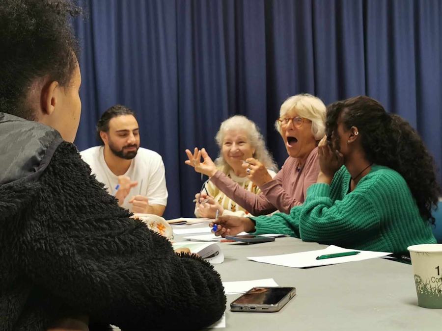

Språkkaféen er et uformelt og hyggelig møtested for deg som vil bli tryggere i norsk, enten du har bodd her lenge eller har kommet til Norge nylig. Her øver vi på norsk i små grupper, sammen med erfarne frivillige og andre deltakere fra mange ulike land.
Målet er enkelt: å gi deg muligheten til å snakke norsk i et vennlig miljø der ingen trenger å være redd for å gjøre feil. Her handler det om å øve, prøve, le litt - og lære mer for hver gang.
Hva skjer på språkkaféen?
Du snakker norsk sammen med frivillige og andre deltakere, drikker kaffe eller te, og gjør små språkøvelser eller samtaleoppgaver. Fokus er på muntlig norsk - å bruke språket i praksis.
- Små grupper for trygg og naturlig samtale
- Frivillige som hjelper og støtter
- Uformell stemning - ingen tester, ingen krav
- Passer for alle som kan delta i en enkel samtale på norsk
Praktisk informasjon
Sted: Røa bibliotek
Tid: Tirsdager kl. 16:30-18:30
Pris: Gratis
Påmelding: Ikke nødvendig - kom som du er
Velkommen! / Welcome!
For English speakers
You are welcome to join our language café if you know enough Norwegian to take part in a simple conversation. It is free of charge, open to everyone, and you do not need to register in advance.




